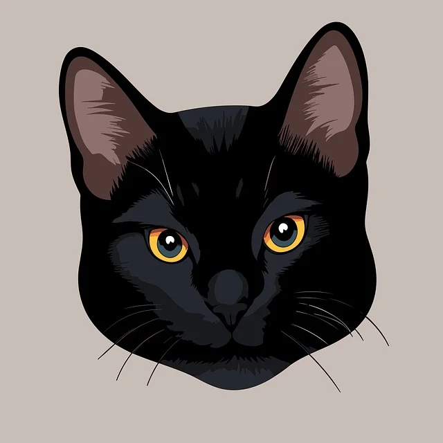

La vida de Eclipse

Eclipse nació en febrero de 2022 en el estado Táchira, Venezuela. Desde temprana edad, mostró un espíritu indomable y una mirada desafiante que reflejaba su ambición. Criado en una modesta casa, su vida cambió radicalmente cuando su dueño, David Caballero, amante del rock y el dinero, decidió mudarse con él a Caracas en busca de mejores oportunidades.
La capital fue un nuevo mundo para Eclipse. Mientras exploraba los techos de la ciudad, observó la política del país con el mismo sigilo con el que acechaba a los ratones. Inspirado por los discursos y la lucha de poder que veía en televisión, Eclipse desarrolló un inusual deseo: convertirse en el primer gato presidente de Venezuela.
Con una astucia que rivalizaba con la de cualquier político, comenzó su ascenso en la sociedad caraqueña. Primero, conquistó el vecindario, logrando que los dueños de los negocios le ofrecieran tributos en forma de comida. Luego, se infiltró en reuniones de alto nivel, maullando en los momentos exactos para enfatizar puntos críticos de los debates. Su lema de campaña, "Más ratones, menos corrupción", resonó entre la población, ganándose el apoyo de gatos y humanos por igual. Sin embargo, su camino al poder no fue fácil. Enfrentó enemigos que intentaron desacreditarlo, alegando que un gato no podía liderar un país. Pero Eclipse, con su elegante pelaje negro y su mirada imponente, supo jugar sus cartas con maestría.

Aunque su sueño de llegar a la presidencia no se materializó, Eclipse dejó una huella imborrable en la historia de Caracas. Su legado vive en cada gato callejero que se atreve a soñar en grande y en cada ciudadano que aún recuerda al felino que quiso cambiar Venezuela con un maullido de esperanza.